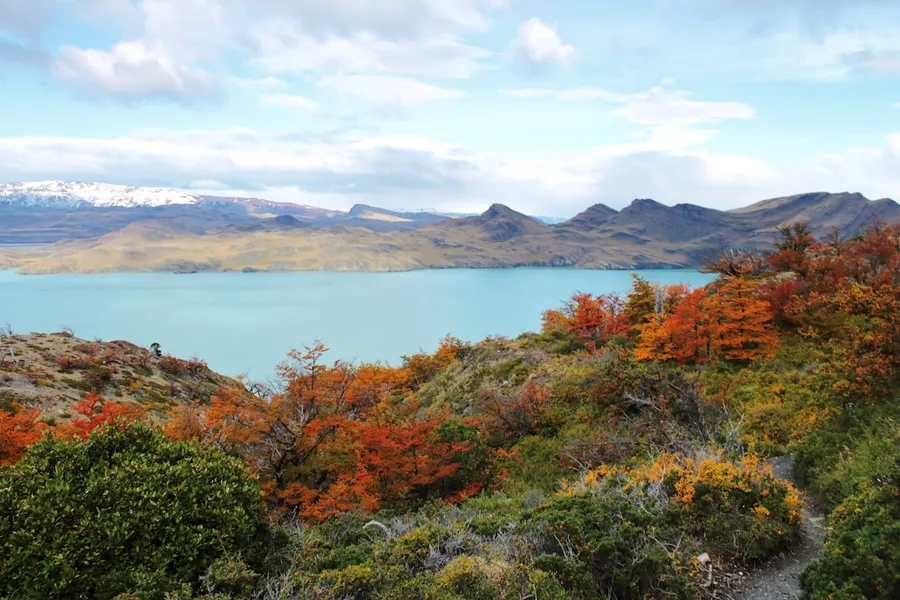
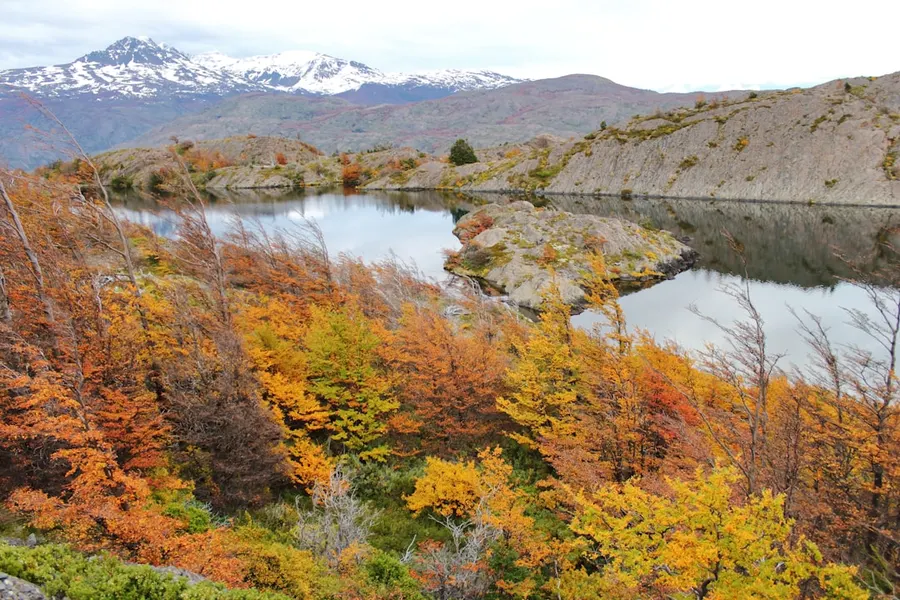
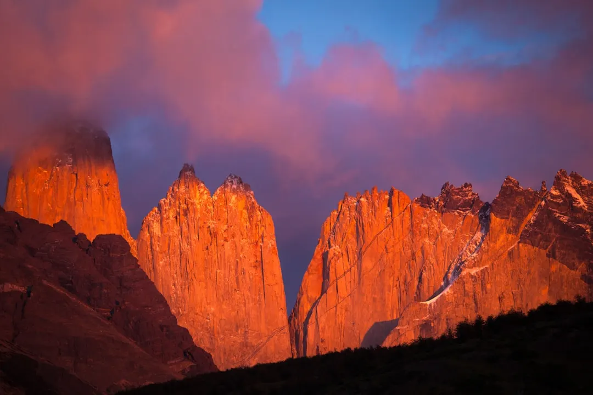

01 · Pourquoi y aller
Qu’est‑ce qui rend la Patagonie chilienne irrésistible en octobre ?
Les contrastes sont saisissants : les sommets du Torres del Paine restent partiellement enneigés, tandis que la steppe se pare de teintes dorées. Cette période offre des conditions de trekking plus clémentes que le plein été, avec moins de vent et des températures moyennes de 8 °C à 15 °C, idéales pour les randonnées longues.
Octobre marque également le début de la saison des oiseaux migrateurs; le cormoran de Magellan et le condor andin sont régulièrement observés près des lacs. Les photographes profitent de la lumière dorée du matin pour capturer des panoramas spectaculaires.


02 · Quand partir
Pourquoi choisir octobre pour visiter la Patagonie chilienne ?
Le climat en octobre se situe entre le froid glacial de l’hiver et la chaleur estivale. Les précipitations sont modérées (environ 50 mm), et le vent, bien que présent, est moins brutal que durant les mois de novembre à février. Cette douceur permet de parcourir les sentiers du parc national Torres del Paine en trois à quatre jours sans risque d’hypothermie.
L’affluence touristique reste faible; la plupart des hébergements et des campings offrent des disponibilités à prix réduit. Les guides locaux profitent de cette saison calme pour proposer des tours personnalisés, souvent incluant des visites de fermes patagoniennes où l’on peut goûter du bœuf de la région.
03 · Zones à explorer
Quelles régions de la Patagonie chilienne explorer en octobre ?
Le parc national Torres del Paine reste le cœur du voyage, avec ses circuits « W » et « O ». Le secteur de la Laguna San Rafael, accessible en bateau depuis Puerto Natales, révèle des glaciers aux parois bleutées. Plus au sud, le parc national Laguna de los Tres se révèle moins fréquenté, parfait pour des trekkings solitaires.
- Torres del Paine : circuits W (4 jours) et O (8 jours)
- Laguna San Rafael : excursion en bateau de 2 heures
- Cueva del Milodón : grotte préhistorique à 45 km de Puerto Natales
- Carretera Austral : tronçon entre Coyhaique et Puerto Río Tranquilo

Photo : Mario La Pergola / Unsplash
04 · Incontournables
Que voir et que faire en Patagonie chilienne en octobre ?
Le point d’ancrage du parc est le Mirador Base Las Torres, accessible après 8 km de montée raide; le lever du soleil dévoile les trois tours emblématiques. La randonnée du Grey Glacier, avec un bateau-taxi jusqu’à la rive du lac Grey, permet d’observer les icebergs dérivants.
Les amateurs de VTT peuvent parcourir la Ruta del Viento, une piste de 120 km entre Puerto Natales et Punta Arenas, offrant des panoramas côtiers et des rencontres avec des manchots de Magellan sur les îles du détroit.
05 · Gastronomie
Quelles spécialités locales déguster en Patagonie chilienne ?
Le « cordero patagónico » (agneau grillé) est la star des restaurants de Puerto Natales; il se marie avec un vin rouge de la vallée de Curicó, notamment un Cabernet Sauvignon. Le « calafate », baie rougeâtre, se transforme en confiture ou en liqueur, parfaite pour finir un repas.
Ne manquez pas le « curanto », plat traditionnel cuit dans un trou creusé à la terre, où se mêlent fruits de mer, viandes et pommes de terre, aromatisés au feu de bois et à la feuille de pangue.
06 · Hébergement
Où dormir selon son budget en Patagonie chilienne ?
Pour les voyageurs au petit budget, les campings du parc (ex. Campamento Torres) offrent des emplacements à 5 € la nuit, avec douches chaudes et cuisine commune. Les auberges de jeunesse à Puerto Natales, comme le Hostal del Cerro, proposent des dortoirs à 20 € la nuit.
Les voyageurs recherchant plus de confort peuvent choisir des refugios (refugees) tels que le Refugio Grey, avec lits en dortoir à 35 €, petit‑déjeuner inclus. Les hôtels boutique de Punta Arenas, comme le Hotel Cabo de Hornos, offrent des chambres à partir de 80 € pour une expérience urbaine.
07 · Budget
Combien coûte un séjour en Patagonie chilienne en octobre ?
Le budget moyen se situe entre 60 € et 90 € par jour, incluant hébergement, repas et transport local. Les vols internationaux vers Punta Punta Arenas coûtent 800 €–1 200 € depuis l’Europe, selon la saison.
Les bons plans : réserver les campings à l’avance via Odyssa, profiter des menus du jour dans les petites cantinas (15 €), et louer un 4×4 partagé pour les excursions hors des sentiers battus (30 €/jour).
08 · Déplacements
Comment se déplacer en Patagonie chilienne en octobre ?
Le moyen le plus pratique est de louer un véhicule 4×4 à Punta Arenas ou Puerto Natales; les routes sont souvent gravillonnées et les distances longues. Odyssa propose des itinéraires détaillés avec points de ravitaillement et stations-service.
Les bus régionaux, comme Buses Bus-Sur, relient les principales villes (Punta Arenas–Puerto Natales–Coyhaique) pour 10–20 € le trajet. Pour les traversées de fjords, les ferries de la compagnie Navimag assurent la liaison entre Puerto Natales et Puerto Río Tranquilo.
09 · Conseils pratiques
Quels préparatifs indispensables avant de partir en Patagonie chilienne ?
Préparez des vêtements en couches: une veste imperméable respirante, une polaire, un sous‑vêtement thermique et un bonnet. Les chaussures de randonnée robustes avec semelle cramponnée sont essentielles pour les sentiers humides.
Vérifiez la validité de votre passeport (au moins 6 mois) et obtenez le visa touristique si vous n’êtes pas ressortissant d’un pays exonéré. Souscrivez une assurance voyage couvrant les activités de montagne et les évacuations d’urgence.
Questions fréquentes sur Patagonie chilienne
Faut‑il un visa pour entrer au Chili en tant que touriste ?
Les ressortissants de l’Union européenne, du Canada et des États‑Unis n’ont pas besoin de visa pour un séjour touristique jusqu’à 90 jours, à condition d’avoir un passeport valide 6 mois après la date d’entrée.
Quelle est la monnaie utilisée en Patagonie chilienne ?
La monnaie officielle est le peso chilien (CLP). Il est conseillé de disposer de petites coupures et de cartes de débit acceptées dans les grandes villes.
Quel temps fait‑il en Patagonie chilienne en octobre ?
En octobre, les températures oscillent entre 5 °C et 15 °C, avec des averses fréquentes mais modérées. Le vent moyen est de 15‑25 km/h, parfois plus fort dans les zones côtières.
Combien de jours faut‑il pour parcourir le circuit W du Torres del Paine ?
Le circuit W se réalise généralement en 4 à 5 jours, avec une moyenne de 20‑25 km de marche par jour, selon votre condition physique.
Est‑il possible de voir des glaciers en octobre ?
Oui, le glacier Grey et le glacier Perito Moreno (côté argentin) restent accessibles en octobre, les icebergs dérivant encore dans les lacs en raison du froid résiduel.
Le conseil Odyssa
Planifiez chaque étape du trek avec Odyssa, ajoutez les points d’eau et les refugios pour ne jamais perdre le fil de votre itinéraire.
Planifiez votre séjour à Patagonie chilienne jour par jour et gardez tout hors ligne avec Odyssa, gratuitement.